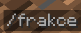

¶Výběr frakce
iFrakce je tvoje strana ve Středozemi. Rozhoduje o tom, kam smíš, s kým bojuješ a které mounty můžeš získat.
¶Příkaz /frakce
Frakci si nově vybereš příkazem /frakce.

![OVĚŘIT] Co přesně příkaz /frakce dělá. V kódu serveru ani v konfiguraci jsem ho nenašel, frakci tam jinak vybírá úvodní obrazovka Středozemě. Text se doplní po odpovědi majitele.
¶Jak se frakce vybírá
- Frakci i rasu si vybíráš na úvodní obrazovce modu Middle-earth, když poprvé vstoupíš do Středozemě.
- Frakci lze podle nastavení modu změnit pomocí starlight phialu.
- Frakci smíš měnit nejvýše jednou za týden. Změnou frakce přicházíš o tituly a o zabrané oblasti (viz Zákoník Středozemě).
![OVĚŘIT] Jak se starlight phial získá a zda je změna frakce na ostrém serveru zapnutá.
¶Frakce a rasy
| Strana | Frakce |
|---|---|
| Dobro | Gondor, Rohan, Dale, Lothlórien, Woodland Realm, Longbeards (Dlouhovousí), Erebor, Shire |
| Zlo | Mordor, Isengard, Moria, Goblin Town, Hobgoblin Tribes (včetně Gundabadu) |
| Neutrální | Brigand (bandité), Wild Goblins. Tyto dvě nelze zvolit. |
Rasy ve hře: člověk, hobit, trpaslík, elf, skřet (orc), uruk, goblin a snaga. Bonusy a nevýhody ras najdeš v Základech boje.
¶Co frakce ovlivňuje
- Dungeony: strana dobra a zla má vlastní dungeony (Dungeony). V pravidlech je zakázáno chodit do dungeonu vlastní frakce.
- Mounti: NPC s questy na mounty mluví jen s hráči své strany (Mounti).
- Války: vyhlašovat bitvy smí jen vůdce frakce (Války).
- Brány dobra a zla: strážce pustí za bránu jen hráče své strany.
© Všechna práva vyhrazena tvůrcům módů, naším výtvorem je pouze zprostředkování serveru. Nejedná se o oficiální produkt Minecraftu. Nejsme spojeni s Mojang Studios.